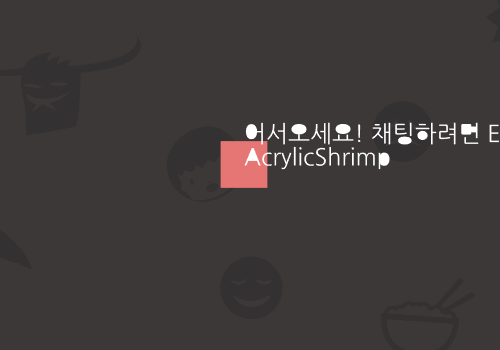
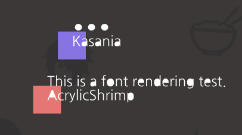

플랫폼 및 언어JavaScript, WebGL
개발 기간2018.07.21 - 2018.07.29
Repositorygithub.com/AcrylicShrimp/TDMessenger
무한한 공간인 것 처럼 보이기 위해 Seamless한 배경이 필요했습니다. 그래서 UV 조작을 이용한 타일링 셰이더를 구현해 해결하였습니다. 화면비 보정 기능도 포함되어 있습니다.
WebGL에서 텍스트를 렌더링하는 방법은 여러가지가 있지만, 저는 글씨를 Vertex화 시켜 렌더링 하는 방법을 택했습니다. 2D 채팅 특성상 화면 내에 존재하는 글자 수는 제한적이고, 한글 채팅의 경우 다양한 글자가 사용되기에 다른 방법에 비해 성능상으로도 이득이라 판단했기 때문입니다. 따라서 Font 파일에서 외곽선을 추출하여 Vertex화하는 과정을 구현했고, 잘 동작했습니다. 다만 글자 내부에 구멍이 있는 경우를 제대로 핸들링하지 못하는 것은 추후 개선해야 할 사항입니다.
